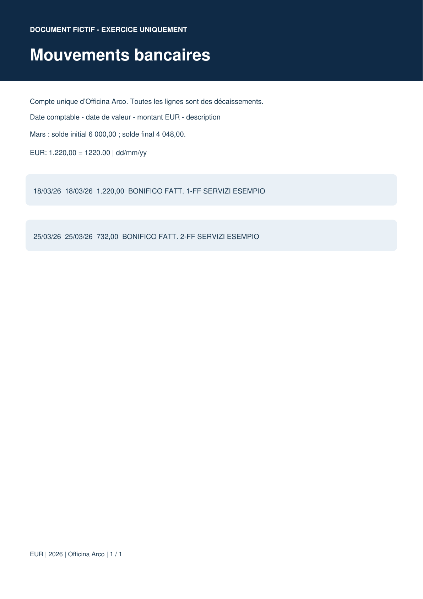

Fichier de la leçon
bank-march-fr.pdf
files/input/bank-march-fr.pdf
Voici le contenu du fichier fourni pour cette leçon. La fonction utilise le fichier original ; cette page permet simplement de le lire.
Télécharger le fichier original

Fichier de la leçon
files/input/bank-march-fr.pdf
Voici le contenu du fichier fourni pour cette leçon. La fonction utilise le fichier original ; cette page permet simplement de le lire.
Télécharger le fichier original
